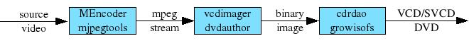
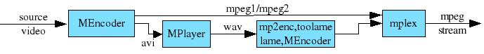

Mpeg Mode

this mode is very similar to Avi Mode, but
the output is an mpeg stream instead of an avi stream. The output video
stream can be mpeg1 (VCD), mpeg2 (SVCD/DVD), mpeg4 or a copy of the
input mpeg
video stream. The output audio stream can be mp1, mp2,
mp3,
ac3, aac, dts, lpcm or a copy of the input audio stream. This
mode is
selected with the options: -encode.
If possible, only MEncoder is used to create the output mpeg stream.
This is the case if you select a single mp2/mp3/ac3/aac audio track.
If you select dts or lpcm audio or more than one audio track, the first
block diagram looks like:

Here is a detailed explanation of the block diagram:
- MEncoder, using the argument of -encode option, creates an mpeg
stream with mpeg1 or mpeg2 video.
- The
audio track(s) is
encoded
separately in an avi stream as specified with the option -encode.
- The audio stream(s) is processed again as in Direct Mode. The
options -mp1/-mp2/-mp3/-ac3/-dts/-lpcm select the final type of the
audio stream(s).
- mplex multiplexes the video stream and the audio stream(s).
Options
In Mpeg Mode you can use all the options of Avi
Mode and Direct Mode, except that the following options are meanless in
Mpeg Mode:
-avisplit
-fixavi
-fixasync
The following options are only available in Mpeg Mode:
-mpegmbr (change or unset the maximum video bit rate)
-telecinesrc (tell encode2mpeg that the source video is soft telecined)
Usage
Here are some results with different encoding options:
TABLE 1 shows the results with different
1 PASS encoding options.
TABLE 2 shows the results with different
2 PASS encoding options.
TABLE 3 shows the results with different
3 PASS encoding options.
With the option -encode you can select the different audio/video encode
options as you do in Avi Mode. The argument of -encode has the form
n:m:i[,b]
n can be:
0 - copy of the input audio stream
(-oac copy)
1 - pcm audio stream (-oac pcm)
2 - mp3lame fast (-oac mp3lame -lameopts fast)
3 - mp3lame standard (-oac mp3lame -lameopts preset=standard)
4 - mp2/libavcodec (-oac lavc -lavcopts acodec=mp2:abitrate=224)
5 - mp3/libavcodec,cbr (-oac lavc -lavcopts acodec=mp3:abitrate=128)
6 - ac3/libavcodec (-oac lavc -lavcopts acodec=ac3:abitrate=192)
7 - mp2/toolame (-oac toolame -toolameopts br=224)
8 - aac/libfaac (-oac faac -faacopts br=96)
m can be:
0 - copy of the input video stream
(-ovc copy)
1 - libavcodec/mpeg[124]video (-ovc lavc -lavcopts
vcodec=mpeg[124]video:psnr)
2 - as 1 + mbd=2 (mbd=2)
3 - as 1 + compression options
(mbd=1:loop:mv0:vlelim=-4:vcelim=7:trell:precmp=1:cmp=1:subcmp=1)
4 - as 1 + quality options
(mbd=2:mv0:dc=9:precmp=6:cmp=6:subcmp=6)
i can be 1, 2 or 3 and select the number of encoding pass.
Warning
In Mpeg Mode MEncoder can show the following messages:
WARNING, SCR: 11.966, DTS: 12.160, PTS: 12.160
[mpeg2video @ 0x87b61a0]rc buffer underflow
[mpeg1video @ 0x876b140]warning, cliping 1 dct coefficents to -255..255
Usually the mpeg stream created will
play fine with your player. Just ignore them.
Bugs
There exist hardware VCD (not DVD) players that fail to play mpegs
created with mencoder. If you have such player you must use the option
-replex.
In Mpeg Mode, usually the multiplexing is done by MEncoder, but on some
occasions mplex is used. In such cases sometime mplex
could abort, usually if you are using the options "-dvd -encode
0:0:1", with this error message:
**ERROR: [mplex] Need to split output but there appears to be no %d
If this happens, add the option "-split <some big value>". The
value has to be bigger than the size of the final mpeg. mplex will
create two mpeg files; the first one
containing almost the whole movie and the second one of only few kB.
This will not make any difference if you are making a DVD.
Examples
encode2mpeg -o DVD dvd://1 -dvd -mpeg -imageonly -encode 0:0:1 -ac3 copy -n n -multiaudio 128,129,130 -addchapter copy -addsub copy
encode2mpeg -o DVD dvd://1 -dvd2dvd -imageonly -n n -multiaudio 128,129,130
Copy the video and three audio streams from a DVD to a DVD. Usefull if
the original DVD doesn't fit on a DVD5 and the copyed stream does. Log file.
encode2mpeg -o DVD5 dvd://1 -dvd -mpeg -encode 0:2:1 -ac3 copy -n n -mpegmbr -a 3 -usesbr 4480 -aid 128
Encode a DVD (with copy of one audio stream) to a DVD5. Log file.
Top